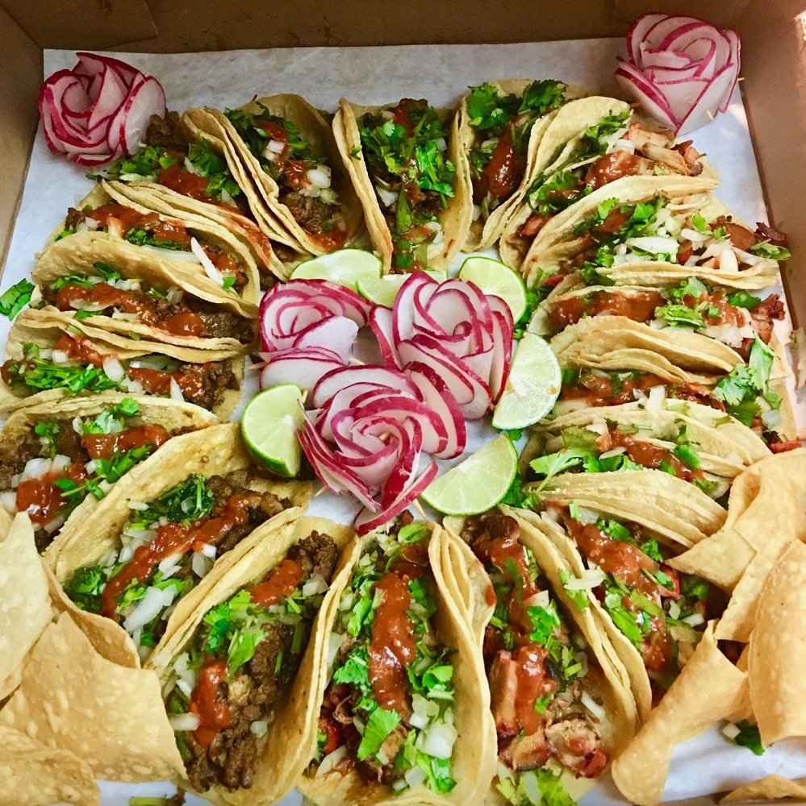

Home
What is a taco?
Ingredients
Occasion
See Also
References
Secret
When should you eat a taco?
You should eat a taco literally whenever you feel like it! It's a delicious bite fit for any occassion or time of day. It's also a perfect and easy dish to prepare for any party and gathering as well.
